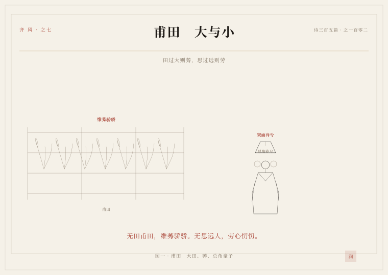
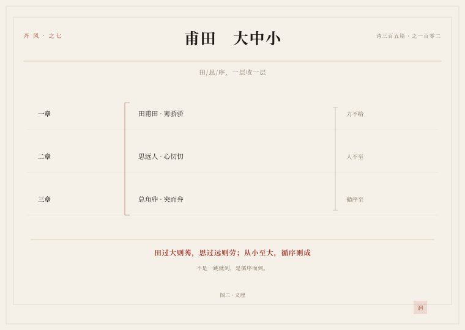

第一百零二篇 甫田
齐风 · 之七 SJ102
朗读 · 普通话
依经文原文朗读，章次不读出；配古琴底乐，不改速、不加拖腔。全库同一音色（豆包 TTS），非播音员录制。
一 解题
诗三判：
- 谁在说：齐大夫。借农事戒襄公：不要贪大田，不要思远人；志大心劳，求非其道。
- 说什么事：三章由田到人，由人到童子。大田不治则莠盛，远人不可致则心劳；末章总角童子忽然加弁，是“循序而至”，不是“躐等而求”。
- 为何编在此：101 写“礼”，102
写“力”。礼乱于上，力竭于下；齐风由伦入政。
《毛序》：“《甫田》，大夫刺襄公也。无礼义而求大功，不修德而求诸侯，志大心劳，所以求者非其道也。”
朱子《诗集传》：“比也。田，谓耕治之也。甫，大也。莠，害苗之草也。骄骄，张王之意。忉忉，忧劳也。言无田甫田也，田甫田而力不给，则草盛矣；无思远人也，思远人而人不至，则心劳矣。以戒时人厌小而务大，忽近而图远，将徒劳而无功也。……婉娈，少好貌。丱，两角貌。未几，未多时也。突，忽然高出之貌。弁，冠名。言总角之童，见之未久而忽然戴弁以出者，非其躐等而强求之也，盖循其序而势有必至耳。”
本库的看法：《甫田》是一首把“大”写成“小”的诗。
大田不量力，草就比苗盛；远人不可致，心就比事劳。末章偏写一个总角童子：未几相见，已加弁成人。不是一跳就到，是循序而到。
诗以“小”收“大”：能治小田，才能治大田；能近人，才能远人。
先辨五事：“无田”的“田”是耕治，读
diàn，不是“没有田”；“甫”是大，不是“甫田氏”；“莠”是害苗草，不是“良莠”之良；“骄骄/桀桀”是草盛，不是“骄傲/桀骜”；“丱”是儿童两角发式，不是“矿”。
二 经文
第一章
无田甫田，维莠骄骄。
无思远人，劳心忉忉。
第二章
无田甫田，维莠桀桀。
无思远人，劳心怛怛。
第三章
婉兮娈兮，总角丱兮。
未几见兮，突而弁兮。
分章：三章，章四句。
三 韵读
- 一章：骄、忉，宵部。
- 二章：桀、怛，月部。
- 三章：娈、丱、见、弁，元部。
读法：宵部敞，月部截，元部收；由田之荒到人之劳，再到童子之成，韵一步比一步紧。
四 字义与名物
- 田：耕治；甫：大。无田甫田：不要耕治过大的田。
- 莠：害苗之草；骄骄：张王、茂盛。桀桀：犹骄骄。
- 忉忉/怛怛：忧劳之貌。
- 婉娈：少好貌。总角：儿童束发为两角；丱：两角貌。
- 未几：未多时。突：忽然高出。弁：冠；加弁为成人。
- 比：全诗以田、草、童子为比；比在事，不在辞。
五 今译
不要耕治太大的田，草就会长得骄骄。不要思念太远的人，心就会劳得忉忉。
不要耕治太大的田，草就会长得桀桀。不要思念太远的人，心就会劳得怛怛。
婉好少好，总角两角。没多久见面，忽然已加弁冠。
六 章旨
- 一章：写“大田”与“莠”。力不给，草就盛；田越大，草越盛。
- 二章：写“远人”与“劳”。人不至，心就劳；人越远，心越劳。
- 三章：写“童子”与“弁”。总角未几，忽然成人；不是躐等，是循序。
- 总收：田过大则莠，思过远则劳；从小至大，循序则成。
末章一转，把“大”落到“小”上。
七 诗教
- 比：以田比国，以草比乱，以童子比新政；比一立，戒就明。
- 观：观“求大功”。无礼义而求功，不修德而求诸侯；志越大，事越荒。
- 群：大夫戒君，君戒国人；一层戒一层，国力才不漏。
- 怨：诗里有戒，无怨。戒是怨的温厚形式。
八 分寸与边界
- 不可把“无田”读“没有田”。它是“不要耕治”；一读没有，全句就成叹贫。
- 不可把“甫田”当甫田氏。它是大田；一读人名，诗就成怀人。
- 不可把“莠”当良莠之良。它是害苗草；一读良，田就不荒。
- 不可把“骄骄/桀桀”当骄傲/桀骜。它们是草盛；一读人格，草就成小人。
- 不可把“弁”当帽子戏。它是加冠成人；一读戏，末章就轻。
九 存疑
- 诗旨：毛序“刺襄公求大功”；朱子“戒时人厌小务大”。一刺君，一戒时；本库两存，以“大/小”读。
- “无田”：毛传“田谓耕治”；朱子音“佃”。从耕治，才与“莠”相应。
- “骄骄/桀桀”：毛传“张王”；一说“骄骄”为草高貌。两读相近。
- “总角/弁”：毛传“总角聚两髦”；朱子“两角”。从两角，童子形象才实。
- 作者与年代：毛序属襄公；朱子不言何公。无确证。
十 跨典
- 《论语·子路》：“欲速则不达，见小利则大事不成。”——此诗戒“躐等而求”，正合此语。
- 《孟子·公孙丑上》：“揠苗助长”喻不循序；此诗“总角突弁”是循序，不是揠苗。
- 《老子》第六十四章：“合抱之木，生于毫末。”——由小至大，循序而成；此诗末章即其象。
- 《诗本音》：三章宵、月、元，见卷五；韵部按古韵推定。
十一 双卡与图
双卡八对：
| 田（耕治，diàn） |
田（田地，tián） |
| 甫（大） |
甫（甫田氏） |
| 莠（害苗草） |
莠（良莠之良） |
| 骄骄（草盛） |
骄骄（骄傲） |
| 桀桀（草盛） |
桀桀（桀骜） |
| 忉忉/怛怛（忧劳） |
忉忉（唠叨） |
| 总角/丱（儿童发式） |
丱（矿） |
| 弁（加冠成人） |
弁（帽子戏） |

图一 · 甫田 大田、莠、总角童子

图二 · 甫田 田/思/序
读图三处：
- 大田与草：图一左大田，田中莠草高过禾苗；草不画满，只画比苗高出一头。
- 童子两角：图一右一个总角童子，只画背影与两角；不画脸，年岁在发式上。
- 循序三级：图二下中三级台阶，上“田/思”，下“小/大”；阶不画高，只画级数。